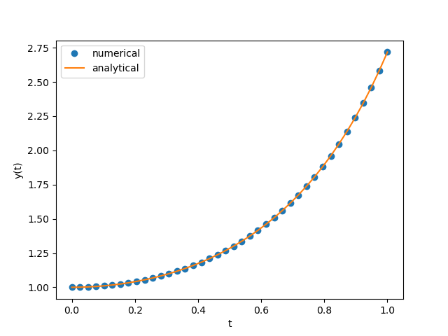
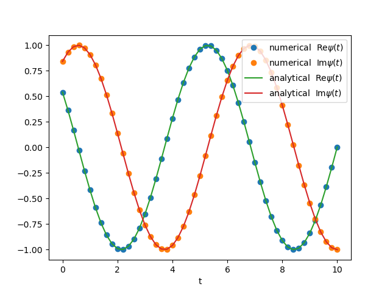

Some examples
1D Real
$$\begin{align} \frac{\mathrm{d}}{\mathrm{d}t}y(t) = 2 t y(t) \end{align}$$exact solution is
$$\begin{align} y(t) = e^{t^2}y(0) \end{align}$$import numpy as np
import matplotlib.pyplot as plt
from scipy.integrate import odeint
def dy_dt(y, t):
return 2*t*y
ts = np.linspace(0, 1, 40)
y0 = 1
ys = odeint(dy_dt, y0, ts)
plt.plot(ts, ys, 'o', label='numerical')
plt.plot(ts, np.exp(ts**2)*y0, label='analytical')
plt.legend()
plt.xlabel('t')
plt.ylabel('y(t)')
plt.savefig('1d.png')2021-12-09-coding-py_ode/1d-real.py

1D Complex
$$\begin{align} \frac{d}{\mathrm{d}t}\psi = f(t) \psi \end{align}$$Write as
$$\begin{align} \frac{\mathrm{d}}{\mathrm{d}t} \begin{pmatrix} \mathrm{Re}\psi(t) \\ \mathrm{Im}\psi(t) \end{pmatrix} = \begin{pmatrix} \mathrm{Re} f(t) & -\mathrm{Im} f(t)\\ \mathrm{Im} f(t) & \mathrm{Re} f(t) \end{pmatrix} \begin{pmatrix} \mathrm{Re}\psi(t) \\ \mathrm{Im}\psi(t) \end{pmatrix} \end{align}$$For example
$$\begin{align} \frac{d}{\mathrm{d}t}\psi = \mathrm{i}\omega \psi \end{align}$$exact solution is
$$\begin{align} \psi = e^{\mathrm{i}(\omega t + \phi_0)} \end{align}$$import numpy as np
import matplotlib.pyplot as plt
from scipy.integrate import odeint
omega = 1
def dPsi_dt(Psi, t, omega=omega):
re = 0
im = omega
m = [[re, -im], [im, re]]
return np.dot(m, Psi)
ts = np.linspace(0, 10, 51)
phi0 = 1
Psi0 = [np.cos(phi0), np.sin(phi0)]
Psis = odeint(dPsi_dt, Psi0, ts)
plt.plot(ts, Psis[:, 0], 'o', label=r'numerical $\mathrm{Re}\psi(t)$')
plt.plot(ts, Psis[:, 1], 'o', label=r'numerical $\mathrm{Im}\psi(t)$')
plt.plot(ts, np.cos(omega*ts + phi0), '-',
label=r'analytical $\mathrm{Re}\psi(t)$')
plt.plot(ts, np.sin(omega*ts + phi0), '-',
label=r'analytical $\mathrm{Im}\psi(t)$')
plt.xlabel('t')
plt.legend()
plt.savefig('1d-complex.png')2021-12-09-coding-py_ode/1d-complex.py

2D Real
A Van der Pol oscillator
$$\begin{align} \frac{\mathrm{d}^2}{\mathrm{d}t^2}x(t) - \mu\left[1 - x(t)^2\right] \frac{\mathrm{d}}{\mathrm{d}t}x(t) + x(t) =0 \end{align}$$Can write as
$$\begin{align} \frac{\mathrm{d}}{\mathrm{d}t} \begin{pmatrix} x(t) \\ x'(t) \end{pmatrix} = \begin{pmatrix} x'(t) \\ \mu\left[1 - x(t)^2\right] x'(t) - x(t) \end{pmatrix} \end{align}$$import numpy as np
from matplotlib import pyplot as plt
from matplotlib import animation
from scipy.integrate import odeint
def dX_dt(X, t, mu=5):
return [X[1], mu*(1 - X[0]**2)*X[1] - X[0]]
ts = np.linspace(0, 30, 1000)
X0 = [0, 0.1]
Xs = odeint(dX_dt, X0, ts)
fig, ax = plt.subplots()
line1, = ax.plot(Xs[0, 0], Xs[0, 1], 'o')
line2, = ax.plot(Xs[0, 0], Xs[0, 1], '-')
time_tags = ax.text(-1.5, 4, r'$t = 0$', fontsize=20)
def ani(i):
line1.set_data(Xs[i, 0], Xs[i, 1])
line2.set_data(Xs[:i, 0], Xs[:i, 1])
time_tags.set_text(r'$t=$' + f'{i:n}')
return None
ax.set_xlim(min(Xs[:, 0]), max(Xs[:, 0]))
ax.set_ylim(min(Xs[:, 1]), max(Xs[:, 1]))
plt.xlabel(r'$x(t)$')
plt.ylabel(r'$x\prime(t)$')
anifig = animation.FuncAnimation(fig=fig, func=ani, frames=len(Xs),
interval=.1)
ax.grid()
anifig.save('2d-real.gif', writer='imagemagick')2021-12-09-coding-py_ode/2d-real.py

2D Complex
Rabi oscillation(ref: another post)
$$\begin{align*} \mathrm{i}\hbar\dot{c}_1 =& \gamma e^{\mathrm{i}(\omega-\omega_{21})t} c_2 \tag{1}\\ \mathrm{i}\hbar\dot{c}_2 =&\gamma e^{-\mathrm{i}(\omega-\omega_{21})t} c_1\tag{2} \end{align*}$$exact solution is
$$\begin{align} |c_2(t)|^2 = \frac{1}{1+\frac{\hbar^2(\omega-\omega_{21})^2}{4\gamma^2}}\sin^2\left( \Omega t \right) \end{align}$$where
$$\begin{align} \Omega = \sqrt{\frac{(\omega-\omega_{21})^2}{4}+\frac{\gamma^2}{\hbar^2}} \end{align}$$In numerical calculation, we set $\hbar = 1, \gamma = 1, \Delta\omega = \omega - \omega_{21}$ , then
$$\begin{align} \frac{\mathrm{d}}{\mathrm{d}t} \begin{pmatrix} \mathrm{Re} c_1 \\ \mathrm{Im} c_1 \\ \mathrm{Re}c_2 \\ \mathrm{Im}c_2 \end{pmatrix} = \begin{pmatrix} 0 & 0 & \sin\Delta\omega t & \cos\Delta\omega t \\ 0 & 0 & -\cos\Delta\omega t & \sin\Delta\omega t \\ -\sin\Delta\omega t & \cos\Delta\omega t & 0 & 0 \\ -\cos\Delta\omega t & -\sin\Delta\omega t & 0 & 0 \\ \end{pmatrix} \begin{pmatrix} \mathrm{Re} c_1 \\ \mathrm{Im} c_1 \\ \mathrm{Re}c_2 \\ \mathrm{Im}c_2 \end{pmatrix} \end{align}$$import numpy as np
import matplotlib.pyplot as plt
from scipy.integrate import odeint
domega = 1
def dC_dt(C, t, domega=domega):
'''C = [Re c1, Im c1, Re c2, Im c2]'''
s = np.sin(domega*t)
c = np.cos(domega*t)
m = [[0, 0, s, c],
[0, 0, -c, s],
[-s, c, 0, 0],
[-c, -s, 0, 0]]
return np.dot(m, C)
ts = np.linspace(0, 5, 51)
C0 = [1, 0, 0, 0]
Cs = odeint(dC_dt, C0, ts)
plt.plot(ts, Cs[:, 0]**2+Cs[:, 1]**2, 'o', label=r'numerical $|c_1(t)|^2$')
plt.plot(ts, Cs[:, 2]**2+Cs[:, 3]**2, 'o', label=r'numerical $|c_2(t)|^2$')
plt.plot(ts, np.sin(np.sqrt(domega**2/4 + 1)*ts)**2 / (1 + domega**2/4),
label=r'analytical $|c_2(t)|^2$')
plt.ylim(0, 1.3)
plt.legend()
plt.xlabel(r'$t$')
plt.savefig('2d-complex.png')file:2021-12-09-coding-py_ode/2d-complex.py